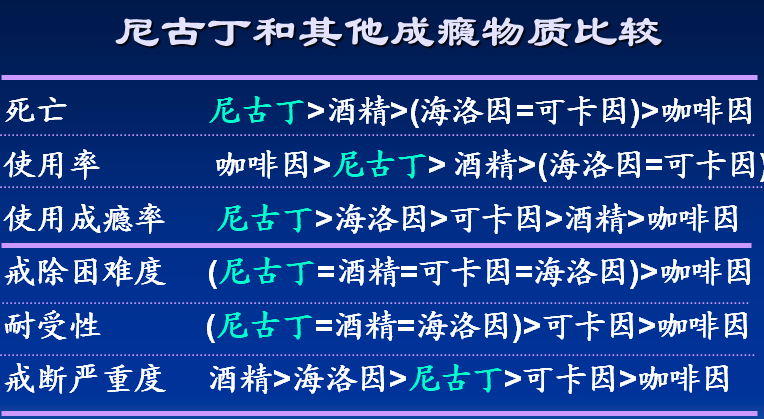

误区一：吸烟是一种习惯，想戒就能戒
吸烟者往往有这种疑虑：吸烟成瘾也是一种病？他们只是觉得吸烟是一种习惯，习惯养成了就很难改，所以很难戒烟。
但事实是，吸烟成瘾不是一种习惯，而是一种慢性疾病，具有高复发的特点，世界卫生组织发布的国际疾病编码中该病的编码为F17.2，属于精神活性物质滥用疾病，与海洛因滥用、酒精依赖等归为一类。
导致吸烟成瘾的物质是烟草中的尼古丁，它的成瘾性非常强，与吗啡、海洛因等大家熟知的毒品成瘾程度类似。因此，请不要轻易尝试吸烟，如果您已经成瘾，希望戒烟的话，请咨询专业医生，进行正规治疗。

误区二：戒烟靠毅力就可以了，我父亲戒烟就是说不抽就不抽了，没用任何药物
单凭毅力戒烟，到1年，不到3%的人坚持戒断。正确的认识烟草依赖是成功戒烟治疗的基础。尽管戒烟对COPD患者的好处多多，但真到戒烟的时候才知道对抗一种成瘾性疾病有多难：很多号称非常有毅力的烟民几经努力，最终都会在煎熬中抵抗不住烟草的诱惑而复吸。统计表明，完全依靠毅力的“干戒”成功率不足3％。科学研究证实，烟草成瘾是一个复杂的行为，烟草依赖是一种慢性疾病，吸烟不仅仅是一种坏习惯，戒不了也并非完全是毅力问题。
很多烟民一旦戒烟就会感到恶心、头痛、烦躁不安、非常痛苦，这一过程与海洛因成瘾者非常相似。事实上，根据世界卫生组织的标准，烟草成瘾与海洛因成瘾一样，都属于药物依赖的范畴。因此，专家指出，科学的戒烟需要个人意志，需要家人、朋友的支持和帮助，更需要专业医生的指导和药物治疗。药物、心理、行为等综合治疗手段才能把戒烟变得既不痛苦又富有成效。2007年，中国出台了第一部由权威机构发表的《中国临床戒烟指南》，遵照这一指南，很多大医院开设了专业的戒烟门诊，提供科学系统的戒烟咨询和治疗，帮助很多烟民成功戒烟并重新找回了健康。
误区三：我想戒，也试着戒过，但烟瘾发作的时候真难受，不如不戒
其实烟瘾真正发作的就是那么一小会儿，一般我们推荐戒烟的时候，要把所有跟烟有关的东西，无论多么好的烟、多么好的烟灰缸、多么好的打火机都要扔掉，在烟瘾发作的时候找点事情去做以分散注意力，不要让自己很容易就接触到烟草，其实只要那么一会儿烟瘾就过去了，就防止了一次复吸的机会。
误区四：吸烟的人戒烟后会不舒服，甚至会得病
当吸烟者减少烟量或停止吸烟时，尼古丁浓度降低到一定水平，吸烟者无法继续体验吸烟的愉悦感，从而引起对尼古丁的渴求，产生强烈的吸烟的欲望，并出现一系列的戒断症状，包括渴求、焦虑、抑郁、不安、头痛、唾液腺分泌增加、注意力不集中、睡眠障碍、血压升高和心率加快等，部分患者还会出现体重增加。但应该明确的是戒断症状是戒烟过程中出现的正常反应，通常在戒烟的前14天内最为强烈，大约1个月后开始减弱，不会对身体造成不良影响，而且现在已经有很多效果很好的戒烟药可以减轻这些不适。而有些人在戒烟后生病往往是多年吸烟的结果，与戒烟无明确关系。因此戒烟对健康是百利无一害。
误区五：不能戒烟，戒烟会增加体重
戒烟后，味蕾功能恢复，味觉嗅觉变好了，吃东西更香，消化和吸收更好，同时人体的代谢变慢，摄入的热量多了而消耗的热量少了，体重自然容易增加。另外，吸烟的手口习惯也会令戒烟者想拿东西吃，使摄入的热量增多。但是，并不是所有人戒烟后都发胖的，而且戒烟后即使体重增加，平均也只增加2~5公斤。只需在饮食习惯和日常活动方面做一些调整，便可防止发胖或尽快使体重恢复到原来的状态。事实上增长的这些体重相对于吸烟所致的健康危害几乎可以忽略不计。

误区六：戒烟两周了，我感觉咳嗽还比以前明显了，是不是戒烟戒出新毛病了？我试着偷偷吸了几支烟，咳嗽很快就缓解了，是不是应该再适当少抽点儿？
吸烟使您支气管的纤毛运动受到抑制，而戒烟后，纤毛排泄功能恢复，戒烟者会出现咳嗽、咳痰的情况，这是您的肺正在变清洁的表现。当您再次吸烟时，纤毛再次回到被抑制的状态，您的咳嗽似乎减轻了，但是烟灰、焦油反而留在肺中了。同时，即使是偶尔吸烟也有可能导致复吸。因此千万不要有“少抽点烟”的想法。
误区七：戒烟之后，偶尔再吸支烟没关系
戒烟后不能轻易尝试吸烟。吸烟者和不吸烟者的大脑是不一样的，烟草中的尼古丁已经把吸烟者的大脑改变了，吸烟者吸烟时曾经体会到的愉悦记忆可以在大脑中存留很长时间。即使一个人2年不吸烟了，如果吸一口烟，之前那种愉悦的感觉可以在瞬间之内恢复，之后就想吸第二口烟、第三口烟，往往导致复吸的开始。烟瘾发作其实也就是一小会，这个时候你要行动起来，转移注意力去做点别的事情，这样想吸烟的想法就会被其他的事情所分散。
误区八：我这次戒烟会不会再复吸呀？
“十个戒烟者中有九个会在戒烟后复吸”，烟草依赖的本质就像哮喘、高血压、II型糖尿病一样是一种慢性疾病，复吸是一种常见的现象。复吸的高危情形有：①情绪状态：积极情绪和消极（不愉快的）情绪如挫败、愤怒、焦虑、抑郁或厌倦等；②人际关系：目前或近期有人际关系的冲突，如婚姻、友谊、家庭成员、老板和员工之间的不和谐的关系；③社会环境：社会压力大（来自家庭成员、朋友或工作伙伴）或看到其他人正在吸烟；④饮酒。美国梅奥医学中心一位医生说“我的患者平均尝试3-4次戒烟”。复吸是“正常的”，但并非不可避免。复吸出现表明治疗不充分，要找出原因，最重要的一点是绝不要放弃努力！

关于吸烟的误区
误区一：偶尔吸烟不会对人体造成严重危害
有些吸烟者可能会说：“我知道吸烟有害，可就是戒不了，那我少抽点，危害不就小了吗？”这种想法大错特错！既然吸烟有害，那么哪怕吸一口烟对身体都会造成伤害，烟雾中含有至少69种致癌物质。如果含有少量三氯氰胺的毒牛奶您都不愿意喝一口的话，那偶尔吸一口烟您为什么就不能不吸呢？
误区二：吸低焦油卷烟危害会小一点
近年来，烟草公司推出了“低焦油卷烟”，他们声称“低焦油卷烟”能降低人体摄入焦油的含量，从而降低吸烟对健康的危害。但事实是，所谓的“低焦油卷烟”只是烟草商的一种宣传手段，其目的在于提高卷烟的吸引力，从而诱导吸烟者继续吸烟或削弱吸烟者戒烟的意愿。
医学专家为了确定“低焦油卷烟”的危害是否小于普通卷烟，通过测定吸入体内的尼古丁等有害成分的代谢物含量来进行评价。结果发现，吸“低焦油卷烟”者体内的烟草烟雾有害成分含量并不比吸普通卷烟的人低。另外美国癌症协会也通过研究证实了吸低焦油卷烟并不能降低吸烟者死于肺癌的风险。

误区三：吸过滤嘴卷烟或者加装过滤烟嘴能降低吸烟的危害
现在的卷烟大多都安装有过滤嘴，人们普遍认为加装了过滤嘴就能够滤除烟雾中的大多数有害成分，使吸烟对健康的危害降至最低。但过滤嘴卷烟真的能降低吸烟对健康的危害吗？
专家指出，卷烟的焦油含量是以吸烟机模拟吸烟者的吸烟行为来测定的，加装了过滤嘴的卷烟确实在进行焦油含量测定时显示焦油量降低，但吸烟者吸烟的实际情况和机器是截然不同的，使用机器吸烟方法测定的焦油含量并不能体现吸烟者实际吸烟过程中焦油的摄入量。
此外，吸烟者在吸过滤嘴卷烟时存在“补偿行为”。卷烟的过滤嘴上有一圈至几圈透气孔。这些透气孔的作用是，在抽吸卷烟时，一部分空气可以从透气孔中进入过滤嘴中，从而降低吸入烟雾的浓度。而吸烟者在吸“低焦油卷烟”时常常会用手指和嘴唇盖住滤嘴上的透气孔，使这些透气孔失效，吸入的烟雾浓度并未降低。另外，吸烟者为了获得足够的尼古丁缓解烟瘾，往往会每口吸入的烟草烟雾量更大，吸烟支数和每支烟的抽吸次数更多。这些行为使得吸烟者实际吸入的焦油等有害物质的含量并未减少。

卷烟过滤嘴上的通气孔设计
误区四：中草药卷烟有保健作用
中草药是中国的国宝，现在都提倡中医保健，中草药卷烟的诞生让吸烟者眼前一亮，降低吸烟危害似乎有望了。
所谓“中草药卷烟”，就是将中草药添加至滤嘴或烟丝中，或者将中草药的提取液喷洒至烟丝上 ，其卖点为中草药的药用功能，期望达到降低吸烟危害甚至产生保健作用的宣传效果。但大家不觉得非常可笑吗？吸烟本来就是一种有害行为，实质就是“慢性自杀”，既然这样，还有必要通过一些中药来达到所谓的保健功能吗？其实可笑的不光是厂商，竟然想出这样的办法来增加卷烟的销量，还有那些被愚弄的相信“中药卷烟”能够达到保健功效的烟民们。
那么究竟“中草药卷烟”危害是否更小？在研制“中草药卷烟”的同时，烟草公司试图对其安全性进行“ 评价”，但其所用方法均为与体内情况相差甚远的体外实验，从未对真正反映有害作用的吸入体内的烟草烟雾有害成分进行测定。而一项国内的独立研究显示，吸“中草药卷烟”者体内尼古丁等有害成分含量与普通卷烟者没有差别。
因此没有证据说明吸“中草药卷烟”对人体的危害低于普通卷烟。烟草业关于“中草药卷烟”“低害”的观点没有充分的科学依据，仅仅是其推动烟草消费的手段。
误区五：我在厨房开着抽油烟机吸烟就不会影响家人的健康了
二手烟暴露没有所谓安全水平，而且即使短时间暴露于二手烟之中也会对人体的健康造成危害。在室内环境中，无论是加热器、排风扇还是空调装置，都无法避免非吸烟者吸入二手烟。即使是吸烟者与非吸烟者处于同一座建筑物的不同房间内，吸烟者产生的二手烟仍然可以通过通风管道等途径到达非吸烟者所处的房间，因此，设置吸烟室或吸烟楼层并不能使非吸烟者免受二手烟暴露的危害。而唯一能够有效地避免非吸烟者暴露于二手烟的方法，就是在室内环境中完全禁烟。

误区六：吸烟可以预防老年痴呆症
许多研究已证实：虽然尼古丁可以作用于脑内的受体刺激多巴胺释放，而老年痴呆症（阿尔茨海默病）是多巴胺的缺失造成的，所以可能有一定根据，但还没有研究能够表明吸烟可以不得老年痴呆。而且，流行病研究已经明确表明，吸烟者比不吸烟者平均减少有效寿命约10年，许多人还没有到能患老年痴呆症以前就已经因烟草所致疾病死亡，所以以吸烟的方式来预防老年痴呆得不偿失。如果达到一定年龄可以使用一些专门针对老年痴呆预防和治疗的药物。
而且有多项研究显示，吸烟不仅无法预防老年痴呆症的发生，而且吸烟者比那些已戒烟或从未吸过烟的人更容易患上阿尔茨海默症和其他形式的老年痴呆症。一项前瞻性研究对 6868例年龄≥55岁、无痴呆的患者随访7.1年，结果发现：吸烟者出现痴呆包括老年痴呆症的可能性较年龄相仿的不吸烟者高出50%。而二手烟也会增加老年痴呆的发生风险。最近有一项研究对3602名65岁以上的老年人进行 6年的随访对比分析（其中有495人存在被动吸烟情况，且被动吸烟的平均时间为28年），结果发现被动吸烟的心血管疾病患者患痴呆症的危险是无被动吸烟、无心血管疾病者的2.5倍。而无心血管疾病者长期被动吸烟也会使痴呆症的发病危险增加 30% 。
误区七：吸烟有利于思考和写作
世界文明史很长，中国文明就五千年，是希波克拉底吸烟呢？是写史记、写资治通鉴的前人吸烟呢？还是李白杜甫吸烟呢？烟草是明万历年间传入中国的，古时中国根本没有烟。如此美妙的文学篇章来自于不吸烟的那个年代，不能说是烟草之功。烟草只是人类文明史的一个短暂阶段。烟草里的尼古丁是有提神的作用，但更会导致成瘾！

误区八：饭后一支烟赛过活神仙
饭后，血液循环量增加，尼古丁迅速地被吸收到血液，使人处于兴奋状态，脑袋飘飘然，就如同“ 烟民”们描述“神仙”一样的感觉。实际上，饭后吸一支烟，比平常吸十支的毒害还大。因为饭后人体热量大增，这时吸烟会使蛋白质和重碳酸盐的基础分泌受到抑制，妨碍食物消化，影响营养吸收。同时还给胃及十二指肠造成直接损害，使胃肠功能紊乱，胆汁分泌增加，容易引起腹部疼痛等症状。而且身体在对食物积极消化、吸收的同时，对香烟烟雾的吸收能力也增强，吸进的有害物质也增加。所以，可以这样说：饭后吸烟，祸害无边。

误区九：边上厕所边吸烟，可以促进肠道蠕动，减缓便秘
许多人认为厕所里有臭气，吸烟可以冲淡一些。事实上，厕所里的氨的浓度要比其他地方高，氧的含量则相对较低，而烟草在低氧状态下燃烧产生更多的二氧化硫和一氧化碳，连同厕所里的有毒气体等被大量吸入肺中，对人体危害极大。目前尚无吸烟可以促进肠道蠕动，减缓便秘的科学报道。但来自多国大量的证据证明，吸烟可以造成消化系统的多种疾病，特别是食管癌、胃癌、结肠癌及消化道溃疡的高发，而患有消化性溃疡的患者，吸烟会使症状加重，影响疗效。

误区十：年轻人戒烟对以后有好处，老年人抽了一辈子，戒了对身体帮助不大，戒不戒无所谓
无论何时戒烟，戒烟者的寿命都将长于持续吸烟者。一项对英国男医生进行的为期50年前瞻随访队列研究发现，吸烟者与不吸烟者相比平均早死亡约10年，60、50、40或30岁时戒烟分别可赢得约3、6、9或10年的预期寿命。戒烟之路“早戒比晚戒好，戒比不戒好”，早戒者比晚戒者可增加更多的寿命年数，而戒烟增加的寿命年数都是“健康的生命年数”，而且，戒烟者与继续吸烟者相比，在他们的生命中更少地伴有疾病和残疾。
误区十一：“只吐不吸”的吸烟方式没有危害
吸烟所散发的烟雾，被吸烟者吸入口内的烟为“主流烟”，烟草点燃外冒的烟被称作“支流烟”。支流烟中的一氧化碳成分是主流烟的5倍，烟碱和焦油是主流烟的3倍，其他有害物质，包括有致癌作用的硝酸铵等也比主流烟中的含量高。只吐不吸，二手烟的危害依然存在，而二手烟已经被国际机构定义为A类致癌物。
关于用药的误区
误区一：戒烟药物会不会把烟戒掉，对戒烟药又成瘾了？
临床试验未发现目前推荐的戒烟药物存在成瘾的情况。并且戒烟药物的使用时间仅为2~3个月，无须长期使用。因此戒烟者可完全放心不会对戒烟药物产生依赖。

误区二：戒烟药是不是外用药比口服药更安全一些？而口服药比外用药更有效？
批准上市的戒烟药安全性和有效性都是得到一定确认的。外用的药物目前主要有尼古丁贴剂和咀嚼胶，对于不稳定期的冠心病患者慎用；另外还要留意观察是否用药部位出现皮肤过敏和口腔黏膜的刺激症状。口服戒烟药包括安非他酮和伐尼克兰。如有癫痫病史，应尽量避免使用安非他酮。对于精神类疾病患者，特别是有严重抑郁症的患者，使用伐尼克兰需要特别慎重。安非他酮的的副作用包括口干、恶心、失眠等。伐尼克兰的副作用包括恶心、易梦、失眠、头晕等。但这些副作用往往比较轻微，使用者都可以耐受。只要您没有戒烟药相应的禁忌症，医生都会尽量为您选择疗效更强的药物，帮助您成功戒烟。
误区三：医生给开的药很有效！吃了两周就不想吸烟了，我是否可以停药了？（是药三分毒，我已经戒烟了，为什么还让我继续吃药呢？）
临床试验发现，服用全疗程药物的患者复吸率远远低于未完成全疗程治疗的患者。为了帮助您巩固来之不易的戒烟效果，彻底成功戒烟，建议您坚持服用全疗程药物。